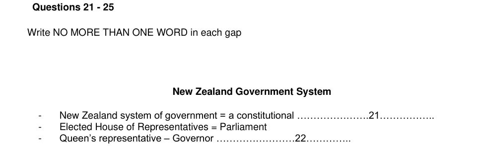

IELTS Listening: Test 23
Listening and questions
Section 1Questions 1–10
Questions 1–10
Write NO MORE THAN ONE WORD AND/OR A NUMBER in each gap.
Finnegan's Flight Centre
Flight info: - from Hong Kong to Singapore on 25 July
it takes approximately 3 hours 1 Minutes
the passenger should check in before 2
the passenger cannot change their flight dates because of work 3 …
the passenger will fly back to Hong Kong on 4
the passenger wants to 5 as soon as she gets back
Other information:
Bert will 6 the confirmation details to the passenger
the maximum weight for 7 Luggage is 10kg
the passenger will check in one 8 at extra cost
the reservation number is 9
the passenger is for a seat next to the 10
Section 2Questions 11–20
Questions 11–15
Complete the sentences below. Write NO MORE THAN TWO WORDS for each answer.
Many 11 happen around cars.
Night time travel on 12 should be avoided.
In the event of a break-down in a lonely place, wait in the car for help from a police car or another 13
When being followed, if there is no police station nearby, find an open garage or store or go straight to an 14
The police station is located on the 15 Between the canal street and the cockleshell court
Questions 16–20
Match the toxic gases in the box to the effects below.
Choose your answers from the box and write the letters A-E next to questions 16-20.
List of toxic gases
- A carbon dioxide
- B nitrogen oxide
- C carbon monoxide
- D hydrogen sulphide
- E Low oxygen air
List of effects
16 People suffer mental impairment
17 It hurts the lungs
18 It makes you breathe faster
19 You cannot see it or smell it
20 It numbs the respiratory tract
Section 3Questions 21–30

Questions 26–30
Choose the correct letters A,B or C
26 A constitution containing rules for governing is
27 New Zealand has some unwritten
28 A parliament with only one chamber is called
29 New Zealand's voting system is known as
30 Political parties are represented proportionally in parliament according to
Section 4Questions 31–40
Questions 31–36
Which of the following descriptions is appropriate for the hat color below?
Choose SIX answers from the list below and write the correct letter A-F , next to Questions 31-36.
List of hat color List of description
- A Black A creative response - be inventive:
- B Blue An emotional response - use intuition:
- C Green A managerial response - like control:
- D Red An optimistic response - be encouraging:
- E White A pessimistic response - be wary:
- F Yellow A rational response - focus on data:
Questions 37–40
Write NO MORE THAN TWO WORDS in each gap
The stepladder technique
Step 1
37 Members presented the task
Step 2
A 38 of two members is created
Step 3
third member added; discuss 39 together
Step 4
Repeat the process adding fourth member
Step 5
All members reach a/an 40
Check your answers
Marking ignores capital letters and accepts plurals and the usual alternative answers. If your answer is right but not accepted, press My answer is also right under it.